Charts follow of: 2015+ Comparisons of Group Death Rates History (All Causes) for the COVID-19 time frame and before, for various groups, Rate being fraction of group's Age Range population dying (WeeklyMean rates over 4 week intervals, other than when 2020's MMWR 53 is involved), fraction expressed as N per Million (10000 <-> 1%).
There are 8 Age Range groups displayed here: 85..99+, 10 year intervals, down to 15..24.
CDC data update used: 2022-Mar-23.
Note: The more recent weeks charted are more likely to still have significantly incomplete data.
Note: "NH-" prefixes indicate "not hispanic".
This page does not allowing adjusting the side-to-side display relationships.
There are 8 Age Range groups displayed here: 85..99+, 10 year intervals, down to 15..24.
CDC data update used: 2022-Mar-23.
Note: The more recent weeks charted are more likely to still have significantly incomplete data.
Note: "NH-" prefixes indicate "not hispanic".
This page does not allowing adjusting the side-to-side display relationships.
NH-Back, NH-White, Hispanic, NH-multirace, NH-Asian
NH-AmIndiaLANat, NH-NatHawOthPacIsl
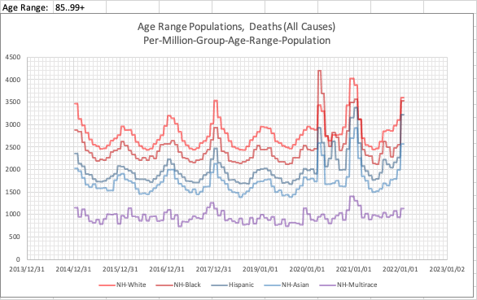
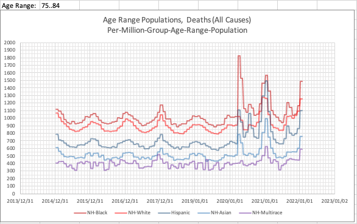
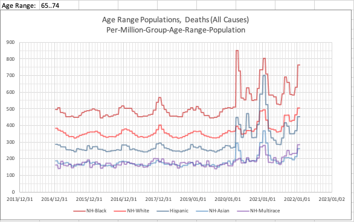
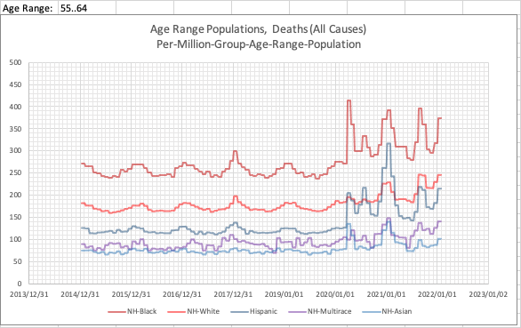
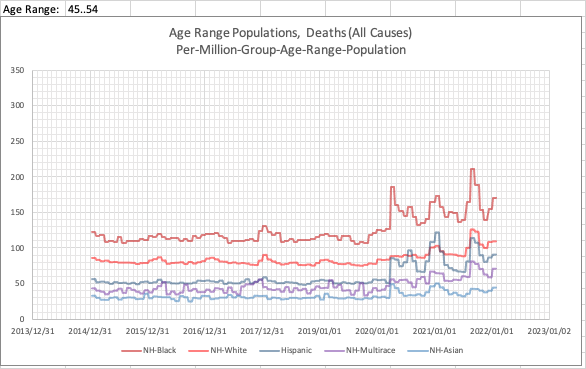
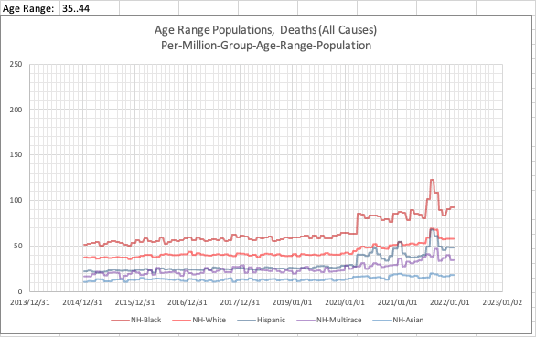
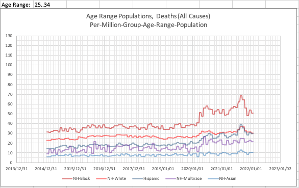
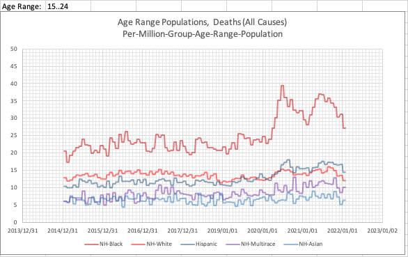
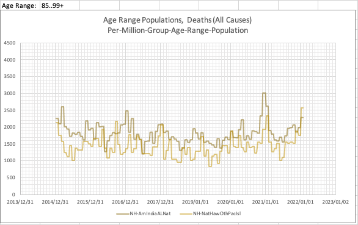

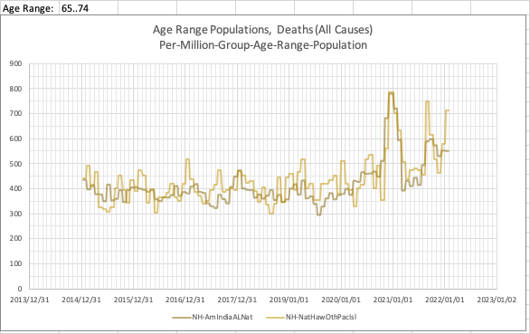

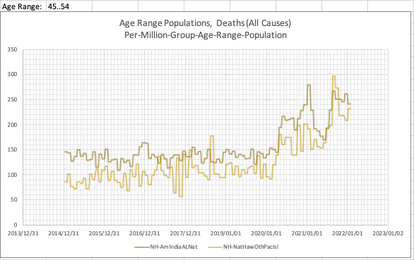
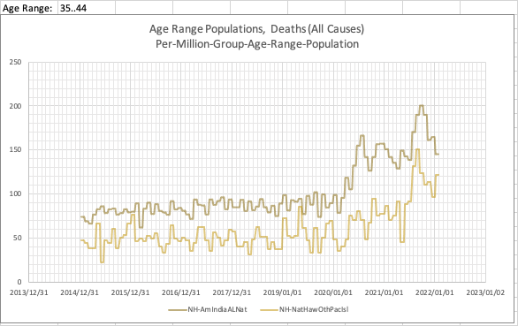
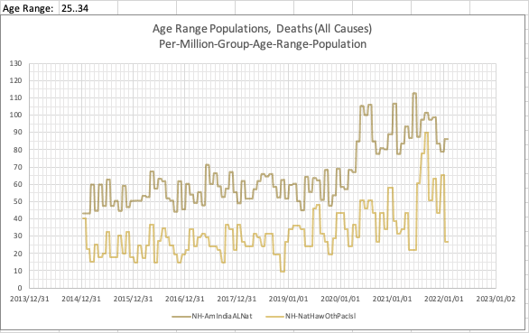
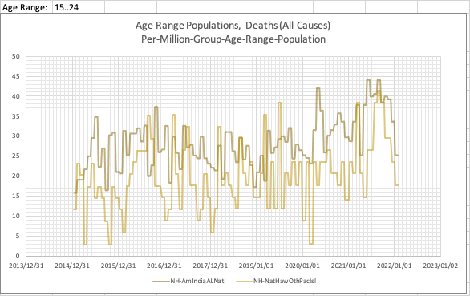